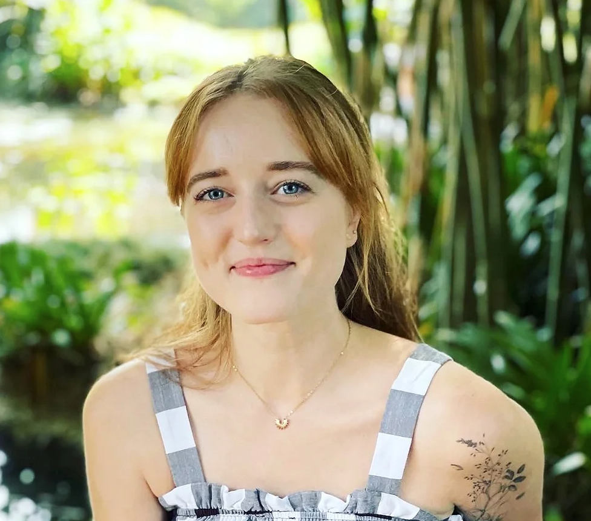

Kennedy O'Connor's Resume

Summary
I am a young professional currently working as a Graphic Designer for Western Digital. I am passionate about my career
and love to accept new challenges. I've been working on developing my skills as a web developer and am looking forward
to this new direction I'm taking.
Education
University of Central Florida
Graphic Design
August 2016 - May 2020
Experience
-
Western Digital
Graphic Designer II
August 2016 - Present
- Worked on several projects at one time
- Designed the 2021 Back to School Campaign from concept to completion
- Created emails for the WD print store
-
InstaNatural
Graphic Design Intern
January 2020 - July 2020
- Created 15-20 social media posts and stories for the InstaNatural Instagram page per week
- Studied social media analytics to generate more views for social media content
- Took product photography and videography
-
VHB
Graphic Design Intern
June 2019 - January 2020
- Gained experience working with a team of designers and multitasking by working on several projects at once
- Created logos and invitations for various events throughout the company
- Created maps and figures for VHB and clients such as FDOT
-
Limbitless Solutions
Graphic Design Intern
January 2019 - January 2020
- Assisted in development of artistic design, branding, and storytelling assets
- Created designs for wall decals that are used in the lab and office area
- Designed t-shirts, hats, leggings, and other merchandise
Skills
- Photoshop
- Illustrator
- Indesign
- Lightroom
- Premiere PRO
- Adobe XD
- Photography
- Videography
Contact Me